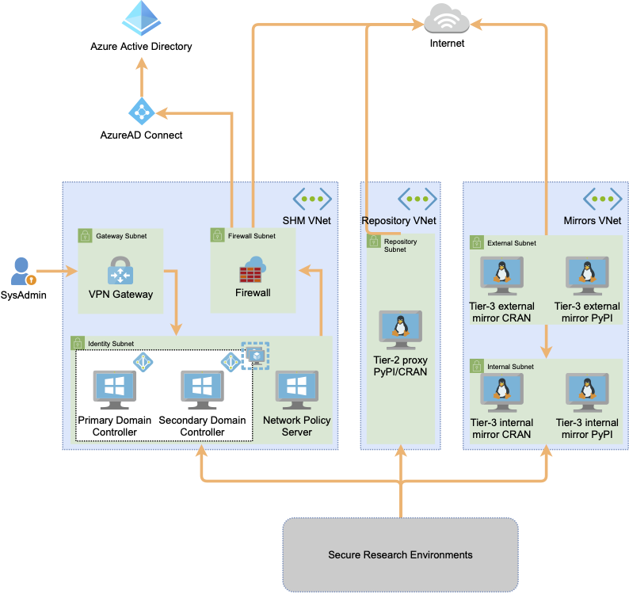

Safe Haven Management design#
The user and machine management services for the Safe Haven are hosted on a separate subscription to any of the secure project environments. These services include the primary authentication providers, VM images, package mirrors and proxies, and other services that contribute to the smooth running of the service. This provides a centralised management facility, ensuring consistency across all secure project environments.
Architecture#
Within the Management segment all authentication services are contained within a single virtual network (VNet). The Windows Servers are running Active Directory and are acting as Domain Controllers. They are configured within an Azure availability set to ensure maximum up time. The Domain Controllers synchronise user details to the Azure Active Directory that is associated with the Management subscription to support self-service account activation and password reset.
In addition to the Domain Controllers there is a Windows Network Policy server, this server provides Multifactor Authentication services to the Remote Desktop Servers hosted within the SREs, connecting with Azure AD to provide this service.
Network security is provided by Azure Network Security Groups that ensure that inbound connections from the SREs are limited to Active Directory and RADIUS traffic.
For management of the environment there is an Azure point-to-site (P2S) VPN service configured. Access to this is limited to the Data Safe Haven administration team.
Package proxies and mirrors#
For Tier 2 and Tier 3 SREs, a selection of Python and R packages can be provided via a set of servers that provide access to some or all of the packages available from the public PyPI or CRAN package repositories. Depending on the configuration of the Data Safe Haven, these packages can be provided via either package proxies or package mirrors.
Package proxies: These make on-demand connections to the public package repositories for approved packages. The proxy server has access to all packages available on the upstream repositories but limits downstream access to the packages permitted for an SRE.
Package mirrors: These synchronise approved packages through a one-way airlock. This provides an additional level of security compared to package proxies. However, the mirrors must be regularly updated, which can take a long time when mirroring a large amount of package data.
Tier 2 environments can access all packages available from the public PyPI and CRAN repositories. Tier 3 environments can access only a pre-approved subset of PyPI or CRAN packages. Connection of SREs to either the appropriate proxy or mirror servers is achieved via VNet peering. While multiple SREs may be peered to the same proxy or mirror VNet, this does not permit communication between SREs.
Package proxy security#
When using a package proxy, the proxy server has very restricted outbound internet access. It is only able to connect to the download endpoints for the upstream package repositories it is providing access to (in our case PyPI for Python packages and CRAN for R packages). While the proxy server has access to all packages from the upstream repositories, it can be configured to only provide access to a pre-approved subset of these packages and proxy servers for Tier 3 environments are configured this way.
If the proxy server was compromised from an SRE, an attacker could access all packages available on the upstream package repositories. In the Turing’s configuration, this would not provide any additional access for Tier 2 environments, but would allow an attacker from a Tier 3 environment to install packages not on the limited pre-approved package list. However, the upstream package repository download endpoints do not allow any data to be uploaded to them, so an attacker would have to separately compromise the upstream package repositories to be able to egress any data through a compromised package proxy.
Package mirror security#
Package mirrors provide an additional level of isolation at the network level, deploying two paired mirror servers for each upstream package repository.

The “external” mirror is protected by infrastructure level network controls that do not permit any inbound connections at all (not even from the “internal” mirror). It can call out to the internet to update itself from the official package server and can push updates to the “internal” mirror via rsync.
The “internal” mirror is protected by infrastructure level network controls that do not permit any outbound connections at all (not even to the “external” mirror). It can receive inbound rsync connections from the “external” mirror to receive package updates and inbound connections from its associated SREs to install packages.
Between them this pair of servers operate as a one-way “airlock” to allow packages to be pulled from the official package server on the internet and made available to Secure Research Desktops (SRDs) in project SREs, while not permitting the mirrors to be used to connect to the internet from a SRE. Even if the “internal” mirror was to be compromised, the infrastructure level network controls restricting outbound connections would prevent access to any other resources within the Data Safe Haven or outside of it.
Package mirror performance considerations#
As package mirrors need to copy all permitted packages, synchronising a large amount of package data can take a long time. In particular, a full initial download of all packages from PyPI for a Tier 2 mirror can take two weeks. Newly approved packages will also only be available after the next mirror synchronisation is complete.